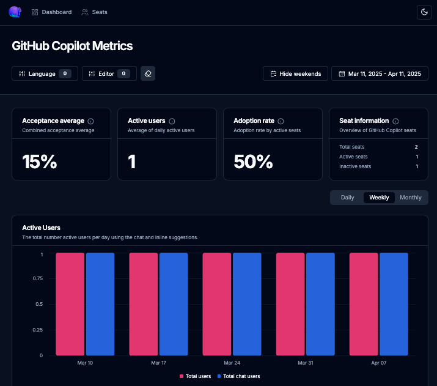

ワークショップについて
このワークショップでは、GitHub Copilot Metrics ダッシュボードの設定と使用方法を学びます。
GitHub Copilot Metrics APIは、GitHub Copilotの利用状況を分析し、開発チームの生産性向上を測定するためのツールです。
Copilot Metricsの概要
GitHub Copilot Metrics API
GitHub Copilot Metrics APIは、組織内でのGitHub Copilotの使用状況データを提供するAPIサービスです。
- 開発者のCopilot利用頻度の測定
- コード補完の採用率の追跡
- 組織全体の導入状況の把握
- チーム間の利用パターンの比較
copilot-metrics-dashboard
copilot-metrics-dashboardは、Metrics APIから得られたデータを視覚化するツールです。
- チーム全体のCopilot使用率のグラフ表示
- コード補完の効果を測定するダッシュボード
- 開発者の生産性向上の定量的な分析
注意: このダッシュボードはMicrosoftが公式提供しており、ハンズオン向けに修正ものになります。MITライセンスの下で提供されており、利用にあたってはライセンス条項に従ってください。
前提条件のセットアップ
1. Personal Access Token (PAT) の発行
Copilot Metrics APIにアクセスするには、適切な権限を持ったPATが必要です。
- [設定] >> [<>開発者設定] >> Personal access tokens >> [トークン (クラシック)]から作成が可能
- 以下のスコープを有効にしてPATを発行：
- manage_billing:copilot, read:org
- または read:enterprise
2. Copilot Metrics APIの許可
組織レベルでCopilot Metrics APIへのアクセスを有効化する必要があります。
- 組織 >> 設定 >> Copilot >> Policies >> Copilot Metrics API Access を有効化
重要: これらの設定が完了していないと、Copilot Metricsのデータが取得できません。
ダッシュボードのセットアップ
インストール手順
オプション1: GitHub Codespacesを使用 (推奨)
- moulongzhang/copilot-metrics-dashboardリポジトリにアクセス
- 「Code」ボタンをクリック
- 「Codespaces」タブを選択
- 「Create codespace on main」をクリックして新しいCodespaceを起動
オプション2: ローカルインストール
git clone https://github.com/moulongzhang/copilot-metrics-dashboard.git
設定ファイルの作成
cd copilot-metrics-dashboard/src/dashboard
cp .env.example .env.local設定例 (.env.localファイルの内容)
# 以下は例です。実際の値に置き換えてください
NEXT_PUBLIC_GITHUB_ENTERPRISE={your-enterprise-name}
NEXT_PUBLIC_GITHUB_ORGANIZATION={your-organization-name}
NEXT_PUBLIC_GITHUB_TOKEN={your-github-PAT}
NEXT_PUBLIC_GITHUB_API_VERSION=2022-11-28
NEXT_PUBLIC_GITHUB_API_SCOPE=organization
警告: Personal Access Tokenは安全に保管し、リポジトリにコミットしないでください。
データの取得と表示
ダッシュボードを起動して、Copilotメトリクスの取得と表示を行います：
npm install
npm run devhttp://localhost:3000でダッシュボードが表示されます。
ヒント: 初回のデータ収集には時間がかかる場合があります。
ダッシュボードの主な機能
ダッシュボードには以下の機能が含まれています:
フィルタリング機能
- 日付範囲によるフィルタリング
- プログラミング言語によるフィルタリング
- コードエディタによるフィルタリング
- 時間枠（日次、週次、月次）による表示切替
主要メトリクス
- 受け入れ率平均: ユーザーが受け入れた提案の割合
- アクティブユーザー数: 最新のサイクルでのアクティブユーザー数
- 採用率: ライセンスされたユーザー総数に対するGitHub Copilotを使用しているアクティブユーザーの割合
- シート情報: アクティブ、非アクティブ、および総ユーザー数
- 言語別内訳: データをフィルタリングできる言語の内訳
- エディタ別内訳: データをフィルタリングできるコードエディタの内訳
シート管理
- Copilotライセンスが割り当てられているユーザーのリストを表示